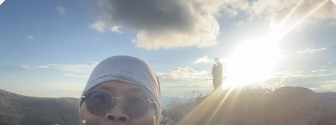
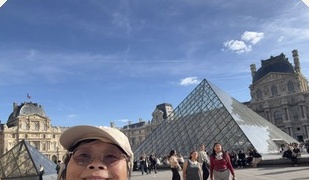
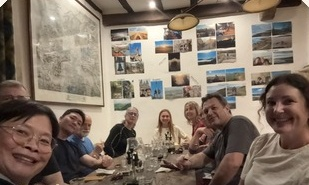
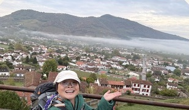
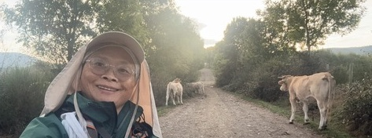

CAMINO FRANCÉS · 2026.10.02—10.06
朝聖之路
第一週，從巴黎走到 Zubiri
WEEK01

'26 10 05翻越庇里牛斯山，日出的時候 ☀︎1,450 m

巴黎出發10/2

SJPP 晚餐10/3

Orisson10/4

'26 10 06牛牛陪我走到 Zubiri10/6
47 km 走路
3 天 開走
€263 總花費
SJPPZubiri
Buen Camino! 下一站 → Pamplona